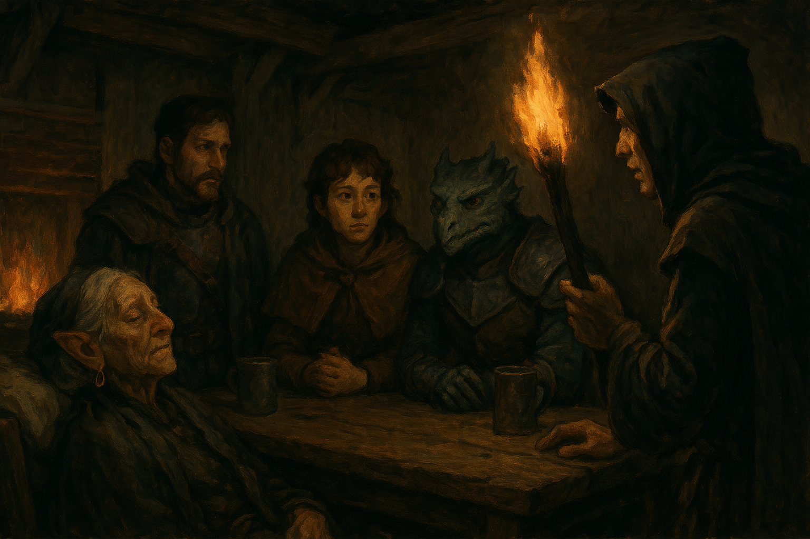

Chapter 1: Stinky Stinky
Hand of the Lich

Hand of the Lich
15050.11.18
酒館樓上，Siri 聽見了 YHWH 和 Indigo 的房間傳來了異樣的聲音，他將耳朵貼在門上，仔細聆聽。木頭嘎嘎聲、喘氣聲，他不知道這是什麼意思。憑藉著他的盜賊工具，Siri 悄聲溜進了房間內，裡面一片漆黑。他躲在角落，緩緩接近，小小拉開拱起的棉被，看見裡頭似乎有肉體在扭動著。然後他聽見了 Indigo 說了聲「換一下」。雖然好奇，但此刻 Siri 知道自己似乎不太適合在這裡，於是他便悄聲離開，但是關門的聲音疑似被 YHWH 聽見了。
Siri 走下樓，看見 Midori、Samael，和剛才讓他沒睡好的 Beau 正在用餐。大家討論著下一步該去哪裡。最終，大家決定應該要去樓上，將其他夥伴叫下來一起討論。
來到 YHWH 的房前，YHWH 已經著好裝，準備下樓了，但 Indigo 似乎只想賴在床上。Midori 也敲敲 Ron 的房門，Ron 站了起身，開啟了門，Midori 隨即感受到房間內有一股惡臭，甚至這股惡臭有種黑色迷霧的感覺，但肉眼卻看不見。隨著 Ron 下樓，惡臭卻跟隨著 Ron 一起移動。
餐桌上，大家討論著 Ron 可疑的手，酒館餐廳另一桌一個神秘的陌生人朝他們靠近。這名自稱「拉」的人是一名占卜師，他表示身上攜帶的神秘羅盤可以偵測邪惡，而在這幾天，指針狠狠指著這間旅店內 Ron 的那隻手，而指針從來沒有這麼穩定過。大家對這名陌生人感到疑惑與警戒，但是在拉表示自己全家都是拉索斯教徒時，大家對他的可疑飆升到最高點，直到酒館老闆前來緩頰，表示自己也是拉索斯教徒，但是也沒有對大家有惡意，拉索斯教在王國，甚至帝國內都是非常普遍的宗教。
冒險者們討論著應該先處理 Ron 的手，還是先處理這名可疑的拉索斯教徒。拉表示自己來這裡的目的只是要警告而已，沒有要特別做什麼。冒險者們討論著是否該嘗試用火去烤 Ron 的手，或是將他剁掉。在一陣紛擾中，老闆建議拉先跑走，以免遭到這群怪人波及。
冒險者們開始盤點該往哪裡去，比較有機會找到有用的線索。他們提到了 Ron 的故鄉尖頂寺、YHWH 待過的拉松學院、或者是距離 Midori 家鄉方努爾市不遠的大學城，那裡似乎是所有知識的貯藏庫。
冒險者決定以大學城為目標，作為冒險的下一步。然而徒步前往大學城要花非常長的時間，屆時 Ron 的狀況會是如何，就很難說了。經過討論後，冒險者們原本想租用或購買馬車，但費用太高，於是考慮單純購買兩批馬匹，搭配 Midori 召喚的小馬，三匹馬一同前行。Siri 也打算利用手邊的用具，打造一個可以讓馬匹拉在後面的座位，自己可以坐在上面，能少佔用一個座位。
Midori 和 Samael 決定去街上買點東西，Siri 在馬廄做工，Beau 和 YHWH 在旅店餐廳處談天，其他人則暫時在樓上休息。Beau 和 YHWH 提及了他在妖精荒野時，曾經在一名拉索斯信徒的身上找到一張紙條，上面記載了關於一支手和一支眼睛的事，讓他不禁聯想到現在 Ron 接上的那隻手。YHWH 回想起過去曾在拉松學院時聽說過的一個傳說，一位名為 Vecna 的古老巫妖，留下了一支手和一支眼睛，使用他們的人會帶來極大的危險。
Midori 和 Samael 購買了一些簡單的用品後，在路邊見到了一名彈奏著魯特琴的中年男子，他彈奏的曲子讓 Samael 感到有點耳熟，因此他們便來到了樂手的面前，聽他的表演。這名男子自稱叫 Dan，是過去住在麥克嵩的人，但已經在這邊待好一陣子了。他彈奏的曲子叫《Memories》，Samael 不記得自己曾經演奏過這首樂曲，不過也許是在路上聽見的也說不定。Midori 覺得這人十分有趣，便和他說了過去自己曾演奏過的一首《Dragon Baby》，Dan 也覺得有趣，Midori 便邀他一起回到旅店，去見見這名傳說中的龍人。
Ron 睜開眼睛，恢復了意識，發現自己的雙手正用力掐著旅店老闆，旅店老闆盡可能地嘗試掙脫，直到 Siri 介入，才暫時脫困。老闆喊著，這名龍人今晚不能在這裡過夜。冒險者們將 Ron 拖出旅店外，讓老闆在旅店內休息。此時 Midori 和 Samael 正好帶 Dan 回到旅店。Dan 搞不清楚狀況，頻頻讓 Samael 感到生氣，後來乾脆用魔法讓 Dan 暫時睡去了。
隨著 Ron 恢復了理智，冒險者們決定先找個附近的住宿處，至少讓 Ron 今晚在別的地方過夜，明天早上再出發去麥克嵩，處理馬匹的購買，然後再出發前往大學城。
Midori、Ron、Samael 和 Beau 四人隨著老闆的指示，在剛剛購物處的附近，找到了一間「旅店」。破舊的店面很顯然沒有招牌，一樓一名看起來年齡難以估計的老太太和他們收了錢，表示樓上的空間想住哪一間自己挑選。四人爬到二樓，每一間看起來都是十分破舊，不是沒有窗戶，就是窗戶都破了。看見一旁還有樓梯向上，Ron 之外的三人便決定向三樓走去，但很意外的，三樓和二樓看起來長得一模一樣。三人決定做個測試，在三樓其中一間房門口做了記號，Samael 和 Midori 再往上爬到四樓（當然，也是長得一模一樣），發現剛剛做的記號在四樓也能看見。Midori 決定爬到五樓，從破掉的窗戶口丟了個垃圾下去，但是四樓的 Samael 和三樓的 Beau 都沒有從窗外看見東西掉下去。
對於這房子感到十分困惑的四人，決定先暫時回原本的旅店吃晚餐，順便告訴 Siri 這間新旅店的位置，晚點再回來住。但是當他們走回一樓時，卻沒有看見原本的那名老太太。
冒險者們決定輪流守夜，以免這個陌生的環境有危險。在 Ron 和 Midori 熟睡後，Beau 和 Samael 意識到時間已經不早了，Siri 卻還未來到旅店找他們，因此考慮先回舊旅店去。兩人商討著，Beau 提議應該把 Midori 也叫醒一起去，以免留著 Ron 和 Midori 兩人，Ron 有可能做出什麼事。最終兩人還是妥協，決定四人一起行動最安全。
同一時間，來到旅店的 Siri 爬到樓上，卻完全沒有見到人影。因為感到不對勁，他決定跑到旅店外，卻從路人那裡得知，這間「旅店」早在 50 年前就已經廢棄，早就沒有在營業了。狐疑的 Siri 為了確保夥伴們的安全，還是決定回到旅店大廳。
走到一樓的 Samael、Beau、Midori 和 Ron 看見了 Siri，五人討論著剛剛 Siri 怎麼沒有在樓上看見他們，然後便走上三樓去。
不久後，樓梯間冒出黑煙。冒險者們發現時，火勢已逐漸散開。大家趕緊把行囊收拾好，朝著樓下跑，卻也發現二樓一樣在火勢之中。大家跑到一樓，意外地發現一樓竟然完全沒有受到火勢影響。大家決定今晚就待在一樓過夜。
Siri 守著夜，卻發現應該熟睡中的 Ron 伸手試著搶走他正在研究的綁在手上的綴飾，幸好他及時閃開。這幾天 Ron 無法控制的行為越發嚴重，對冒險團來說，眼前當務之急便是解除 Ron 身上奇異的狀況，而這一切都指向那隻來路不明的手。